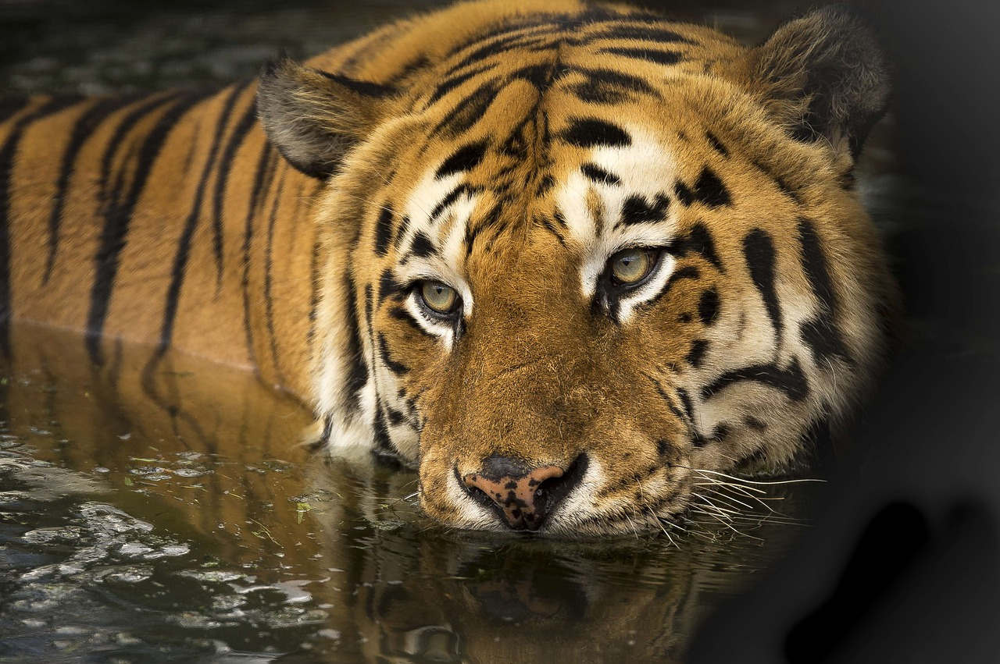

A propos
QUI SOMMES-NOUS ?
Depuis 1973, le WWF France agit au quotidien afin d'offrir aux générations futures une planète vivante. Nous œuvrons pour mettre un frein à la dégradation de l'environnement et construire un avenir où les humains vivent en harmonie avec la nature.
Le Fonds Mondial pour la Nature (WWF) est l'une des toutes premières organisations indépendantes de protection de l'environnement dans le monde, avec un réseau actif dans plus de 100 pays et fort du soutien de près de 6 millions de membres. Le WWF France, Fondation reconnue d'utilité publique, oeuvre pour une planète vivante depuis Paris, Marseille, les Alpes, la Guyane et la Nouvelle-Calédonie.
ENSEMBLE, NOUS SOMMES LA SOLUTION
Envie d'échanger avec nous ? Adresses postales des différents bureaux du WWF France, contacts téléphoniques et courriels, tout est là, n'hésitez plus !
Organisations
Le WWF est constamment à la recherche de talents qui partagent sa ferveur pour mettre un frein à la dégradation de l'environnement. Vous souhaitez nous rejoindre ? C'est par ici !
Nos politiques sociales
Adepte d'une action fondée sur le dialogue et le respect de l'autre, le WWF adopte une approche globaliste prenant en compte l’interdépendance entre l'état de la planète et le développement humain.

Le siège du WWF International dirige le réseau des bureaux du WWF dans le monde entier, dont celui du WWF France, favorise les partenariats mondiaux et coordonne les campagnes internationales.